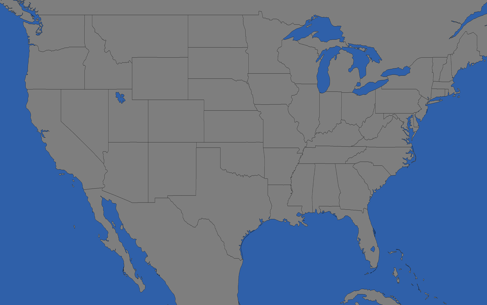

GO
Reset
12.1.0
WeatherStar 4000+ (Intl)
v12.1.0
Enter your location above to continue
WeatherStar
v12.1.0 (Itl)
Current Conditions
Loading
Press Here
Failed
No Data
Disabled
Retrying
Hourly Forecast
TEMP
LIKE
WIND
Hourly Graph
Temperature
Cloud %
Precip %
75
65
55
12a
6a
12p
6p
12a
Travel Forecast
For
LOW
HIGH
Current
Conditions
Wind:
Humidity:
Dewpoint:
Ceiling:
Visibility:
Pressure:
Cloud Cover:
UV Index:
Local
Forecast
Latest
Observations
°F
°C
Weather
Wind
Regional
Observations

Almanac
Monday
Tuesday
Sunrise:
6:24 am
6:25 am
Sunset:
6:24 am
6:25 am
Moon Data:
Extended
Forecast
Lo
Hi
Local
Radar
PRECIP
Light
Heavy
Marine Forecast
MARINE API FAILURE
WINDS:
SEAS:
Air Quality
Today
HAZARDOUS
VERY UNHEALTHY
UNHEALTHY
GOOD
AQI FAILURE
Personal
Weather Station
NO DATA
Wind:
Humidity:
Dewpoint:
Visibility:
Pressure:
UV Index:
Star
Fork
Issue
Sponsor
This is a simulation of The Weather Channel's (TWC) WeatherStar 4000+
Background info, linking, Q&A, other uses, and questions?
-
Check the readme
Resources & data provided by:
-
Open Meteo
-
Internet Archive
-
TWC Classics
-
Leaflet
-
OpenStreetMap
-
ESRI
-
Rainviewer
Selected displays
Settings
Sharing
Copy Permalink
Link copied to clipboard!
Copy this long URL:
Forecast Information
Location:
Last Update:
(None)
Auto Refresh:
--:--
Personal Weather Station Information
Station Id:
Last Update:
(None)